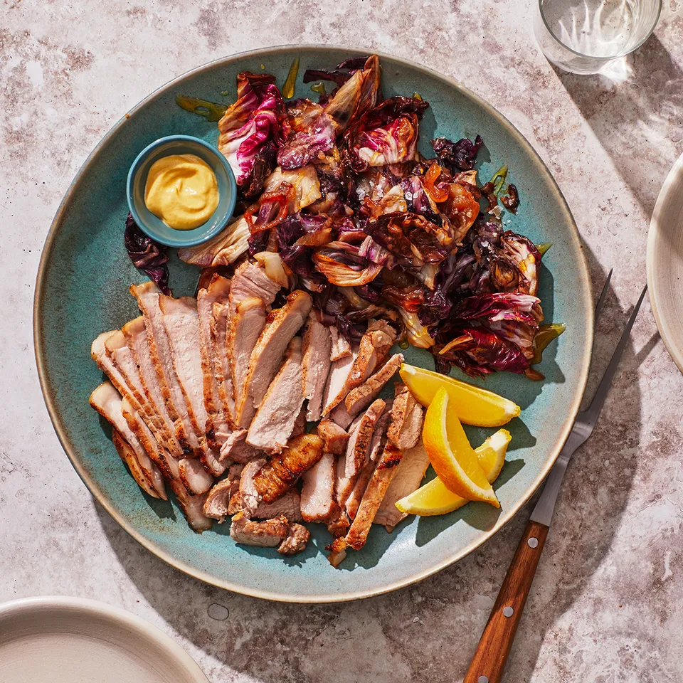

Salt-and-Sugar Pork Rib Chops

Ingredients
- 2 tsp. sugar
- 2 tsp. Diamond Crystal or 1 1/4 tsp. Morton kosher salt, plus more
- 1 lb. 1"-thick bone-in pork rib chops
- 4 Tbsp. grapeseed or vegetable oil, divided
- 1 small onion, thinly sliced crosswide, separated into rings
- 1 head of Treviso radicchio or other radicchio (12-14 oz.), coarsely chopped
- 1 lemon, halved
- Honey (for drizzling)
- Flaky sea salt
- Dijon mustard (for serving)
Instructions
-
Combine sugar and 2 tsp. Diamond Crystal or 1¼ tsp. Morton kosher salt in a small bowl.
Lightly pound pork chops with a meat mallet, rolling pin, or the heel of your hand to ½" thick.
Pat chops dry; season all over with salt mixture.
-
Heat a large cast-iron skillet over medium-high 2 minutes. Add 3 Tbsp. oil, followed by pork chops.
Cook chops, pressing down to ensure good contact with pan and turning every minute, until very well browned
and charred in spots and an instant-read thermometer inserted into the thickest part registers 135°, 5–7 minutes.
(Chops will still be a little pink inside; if you prefer yours well-done, cook another minute or two.)
Transfer chops to a large plate and let rest 10 minutes.
-
While the chops are resting, carefully pour off fat from skillet and wipe out any burnt bits.
Heat remaining 1 Tbsp. oil in skillet over medium. Add onion and season with kosher salt. Cook, stirring occasionally,
until floppy and lightly browned, about 4 minutes. Working in batches, add radicchio, tossing and letting it wilt
slightly before adding more; season with kosher salt. Cook, stirring occasionally, until radicchio is wilted and
tender with just a little bite in the thickest ribs, about 3 minutes. Squeeze in juice from a lemon half;
toss to combine. Transfer radicchio mixture to a platter and drizzle a little honey over.
-
To serve, carve meat away from pork chop bones and slice against the grain; arrange on platter alongside radicchio.
Drizzle any accumulated juices over meat and season with sea salt. Serve with Dijon for dragging pork through and
remaining lemon half for squeezing over.